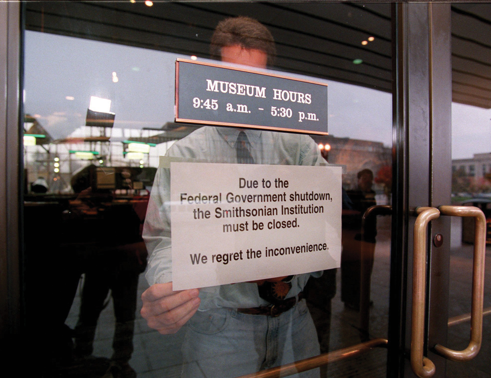

After reading this section, you should be able to answer the following questions:
We have seen the many ways the federal bureaucracy makes crucial contributions to government and public policies. Yet its depiction in the media is mixed. On the one hand, emphasizing waste, incompetence, malfeasance, and abuse, the media tend to be critical, even dismissive. On the other hand, many agencies are portrayed as competent and effective. This can be explained with an analysis of agency-media interactions.
There is so much variety in the agencies, commissions, and offices that make up the federal bureaucracy that we might expect their interactions with the media to differ greatly. After all, some agencies, such as the Department of Defense, have enormous budgets that require constant public justification. Others, like the far leaner Department of State, do not. Some, like the National Institutes of Health, deal with technical and intricate policy areas and their officials fear that their work will be distorted when it is translated by journalists. Others, like the Federal Trade Commission, are deemed by reporters to be dull, narrow, and not suitable for dramatic, exciting news.
In practice, media operations from one agency to the next resemble each other. Media scholar Stephen Hess studied those of the Food and Drug Administration (FDA) and Departments of Defense, State and Transportation. Hess concluded, “Regardless of how they were organized or how different their sizes, each performed the same duties in a similar manner.…The Pentagon’s press operations appears much like the FDA’s writ large.”Stephen Hess, The Government/Press Connection: Press Officers and their Offices (Washington, DC: Brookings, 1984), 17.
As in the White House, the relationship of bureaucrats and reporters is both adversarial and cooperative. Political appointees and civil servants may be anxious about reporters’ powers to frame and reinterpret policy decisions. Yet they understand the importance of maintaining a friendly relationship with reporters to try to get their agency reported favorably to boost public support for their programs and budgets. Moreover, they can never assume that the media will ignore them; they must be prepared to deal with reporters at a moment’s notice. In practice, both sides usually need each other—journalists for information, bureaucrats for favorable news or at least to mitigate negative news.
To meet the media’s never-ending appetite for news, reporters turn to readily accessible press officersPeople scattered through the bureaucracy who serve as official spokespersons for their agencies., who serve as official spokespersons for their agencies. Press officers, who are often former journalists, sympathize with the reporters who cover agencies and strive to represent their needs within the agency. They work to provide information, a quick quote, or a tidbit on a given topic that will satisfy any and all reporters that contact them.
At the same time, reporters often search for and thrive on leaks (unauthorized anonymous disclosures). These may come from high-ranking appointees in the agency seeking to float trial balloons or to place decisions in context. The source may be deep in the bureaucracy, as in the Abu Ghraib prisoner abuse scandal. Reporters also gain revelations through official reports and investigations conducted by officials in an agency.
Agencies need the media for external and internal communication.
An agency may need favorable media depictions (1) to help it enhance its public image and build public support, (2) to ensure that the budget it receives from Congress is adequate for its mission, and (3) to reduce interference from presidents and their political appointees. Media stories that laud an agency’s indispensable skill at solving important problems affecting a large public discourage such threats. For example, if the Centers for Disease Control and Prevention swiftly send out warnings about a new outbreak of illness, they not only alert the public but also provide clear evidence of their competence—and justification for an ample budget.
Agencies foster public support by cooperating with reporters but guiding them toward information and framing subjects boosting their image. Take the Department of Transportation (DOT), which reporters usually find boring. In 1982, a passenger jet took off from Washington’s National Airport and crashed in the Potomac River. Linda Gosden, DOT’s director of public affairs, weeded out unconfirmed information about the causes of the crash, thereby helping reporters in their jobs of ensuring accuracy and avoiding panic. She also quietly steered reporters away from any hint that the crash might have been caused by inexperienced air-traffic controllers hired after her boss, the transportation secretary, fired striking unionized air-traffic controllers in 1981.Stephen Hess, The Government/Press Connection: Press Officers and their Offices (Washington, DC: Brookings, 1984), 55–56.
The agencies’ attention to the media goes beyond the news. Hollywood directors shooting a war movie routinely contact the Defense Department for assistance, ranging from technical advice to the use of military equipment. Nothing obliges the Pentagon to cooperate with an applicant, so it grants requests only to projects that depict it favorably. Hollywood classics raising serious questions about the military—Fail-Safe, Dr. Strangelove, and Apocalypse Now, for example—asked for but did not receive Pentagon help. By contrast, Top Gun, the top-grossing film of 1986, ended up acting as a recruiting poster for Navy pilots: it gained box-office cachet from aerial sequences filmed in several $37 million F-14 jets the navy provided free of charge.Lawrence H. Suid, Guts and Glory: The Making of the American Military Image in Film (Lexington: University Press of Kentucky, 2002).
Agencies find it hard to communicate internally as they grow bigger. Top agency officials worry that subordinates will not grasp what the agency is doing or that leaks from deep in the bureaucracy will characterize policy. So they have incentives to communicate what the agency’s policy is, stifle disagreement, and remind its personnel of its mission. What appears on the surface to be a service to reporters actually meets these crucial internal needs of a bureaucracy. For instance, the State Department’s daily noon briefing for reporters is indispensable for the State Department; it sets a deadline to establish US foreign policy and uses the news media to communicate that policy throughout government and to foreign service officers around the globe.On the State Department’s noon briefings as policymaking occasions, see Stephen Hess, The Government/Press Connection: Press Officers and their Offices (Washington, DC: Brookings, 1984). On the role of news in an agency’s internal communication, see Doris A. Graber, The Power of Communication: Managing Information in Public Organizations (Washington, DC: CQ Press, 2003), chap. 8.
Agency press officers communicate internally by searching for news stories bearing on the agency and reproducing them in compilations circulated through the agency called “the clips.” Since the clips exaggerate the prominence—and importance—of news coverage of each agency, an agency’s personnel becomes ever more sensitive to—and influenced by—media attention.
At the few agencies regularly covered by news outlets—for example, the “inner cabinet” of the Departments of State, Defense, Treasury, and Justice—dynamics resemble the White House. Cabinet secretaries heading these departments become the public faces of their agencies, even celebrities worthy of mockery on The Daily Show, jokes on late-night talk shows, and mimicry on Saturday Night Live. Like presidents, their influence is constantly monitored and measured by the observing media.
Reporters covering inner cabinet departments use their assignments to benefit both them and the department they cover. To land a front-page or lead story, they stress the importance of the agency’s policy area within their news organizations. But to get the information that impresses editors and producers, reporters must rely on the input of top officials. Based at the department itself and interacting heavily with its personnel, inner cabinet reporters begin to reflect the department’s procedures, approaches, and priorities (see Note 14.32 "Comparing Content").
Reporters gravitate to the Pentagon for stories about operational guns-and-ammo firepower. This approach is handy for the Defense Department, which tries to “educate” reporters—and through them, the public—on the benefits of sophisticated weapons systems (and reasons for a huge budget). The Pentagon fosters favorable coverage by giving conditional access: providing captivating video to reporters of successful military sorties, sending them to reporters’ boot camp to help them appreciate the soldier’s life, or “embedding” them in military units, which enables them to file compelling human interest stories of brave warriors. Even skeptical reporters find the drama and vividness of such content irresistible for the news.
A Tale of Three Newsbeats
In foreign policy, officials at the State Department, in charge of diplomacy, and the Pentagon, directing military options, are often at odds. There is a similar division between State Department correspondents and Pentagon reporters, who at times sound like spokespersons for the agencies they cover.
A revealing example comes from the early weeks of the first Persian Gulf War, provoked by Iraq’s 1990 invasion of Kuwait. American forces and allies had launched an air attack on Iraq and were readying an assault on land. On February 21, 1991, ABC’s Moscow correspondent revealed that Iraqi Foreign Minister Tariq Aziz and Soviet President Mikhail Gorbachev had reached a proposed agreement to forestall a ground war. This unexpected news broke into Peter Jennings’s nightly broadcast. His team, facing the tough task of making sense of breaking news, declared a “Special Report” through a tour of newsbeats in Washington.These excerpts are taken from the videotape of the February 21, 1991, ABC News broadcast available through the Vanderbilt Television News Archive. Emphases are in the original broadcast. Jennings talked to three reporters.
None of them had a chance to interview anyone; they relied on hunches of how the people they cover might react. White House correspondent Brit Hume gave what he thought would be an official response from President George H. W. Bush: “Well, Peter, it occurs to me that given the president’s insistence all along that all—all—U.N. resolutions be adhered to…the administration will immediately find fault with this proposal.”
Jennings next asked State Department reporter John McWethy for a “first reaction” to the news. McWethy suggested that the ground war would have to be postponed and that the possibility for neutral forces to supervise Iraq’s withdrawal from Kuwait would be attractive to the United States.
Pentagon correspondent Bob Zelnick retorted, “I would disagree, at least from the Pentagon’s perspective, with Jack’s [McWethy’s] comments that it will be likely be acceptable to have forces supervising that are not involved in the fighting.”
The rivalry of diplomacy at state and guns and ammo at defense and the tension between the policy focus of State and the political focus of the White House was being played out in the disagreements of the three reporters.
Hume, McWethy, and Zelnick presented themselves as impartial, knowledgeable observers at their newsbeats. A great strength of the newsbeat system is the ability of reporters to grasp and convey the essence of the office and officials they cover. The downside is they may simply report from the perspective of the institution as if they were official spokespersons rather than holding the occupants of that institution accountable. Of course, as mainstream media reduce their beat reporting, it is unclear who will replace reporters. Bloggers, perhaps?
But what happens when a dramatic event develops into a crisis and thrusts an obscure agency into the news?
On April 20, 2010, the Deepwater Horizon oil rig in the Gulf of Mexico exploded, killing eleven workers. For the next several months, millions of gallons of oil poured into the Gulf of Mexico. A giant oil slick destroyed the ecology, polluted coastlines, killed animals and ruined their habitats, and damaged the fishing industry, tourism, and real estate businesses. It was the worst oil spill in American history.
The federal government, which had leased the area to British Petroleum (BP), initially deferred to the oil company, relying on it for the technology, personnel, and financing to stem the flood of oil and initiate the cleanup. But BP’s efforts were woefully ineffective, and it drastically underestimated the amount of oil pouring into the Gulf and the rate at which the oil leaked.
The media, led by the New York Times, looked for the government agency most responsible for the disaster. Their pursuit led them to the Minerals Management Service (MMS) of the Interior Department. MMS is required by the Outer Continental Shelf Act to inspect the approximately four thousand offshore platform facilities in the Gulf for safety and operational compliance.
The Times reported that MMS had approved at least three huge lease sales, 103 seismic blasting projects and 346 drilling plans, including Deepwater Horizon, without getting required permits from the National Oceanic and Atmospheric Administration (NOAA). The newspaper also reported that the MMS routinely overruled the safety and environmental concerns of its staff biologists and engineers, pressuring them to change their findings that predicted accidents. The MMS was reported to have routinely exempted BP and other companies from having to provide environmental impact statements.Ian Urbina, “U.S. Said to Allow Drilling Without Needed Permits, New York Times, May 13, 2010, A1. Yet “from 2001 to 2007, there were 1,443 serious drilling accidents in off-shore operations, leading to 41 deaths, 302 injuries and 356 oil spills.”Erik Lipton and John M. Broder, “Regulators’ Warnings Weren’t Acted On,” New York Times, May 8, 2010, A12.
MMS essentially allowed the oil industry to regulate itself. With respect to the Deepwater Horizon rig, as reported in the Times, MMS gave BP permission to test the blowout preventer at a lower pressure than federally required and granted another exception to the company to delay mandatory testing of the preventer because it had lost well control. It did not require BP to keep a containment dome on the rig: BP took seventeen days to build one on shore and ship it to sea, where it did not work.Ian Urbina, “In Gulf, It Was Unclear Who Was in Charge of Oil Rig,” New York Times, June 5, 2010, A1.
Investigating MMS, the Interior Department’s inspector general reported on coziness with the industry, such as the MMS’s allowance of oil and gas personnel to fill out inspection forms that would then be completed or signed by the MMS inspector. Many MMS inspectors had worked for the oil and gas industry. They accepted gifts from the companies and were friends with its employees.Mary L. Kendall, “Investigative Report—Island Operating Company, et al.,” U.S. Department of the Interior, Office of Inspector General, March 31, 2010, posted to web May 25, 2010, accessed November 11, 2010, http://abcnews.go.com/images/Politics/MMS_inspector_general_report_pdf.pdf.
The Obama administration had not totally ignored MMS, which had a reputation for scandal and corruption. New Secretary of the Interior Ken Salazar had started to try to reform the agency with ethics standards. A new head had been appointed, but she apparently did little to fix or even change the agency.
After the revelations, she resigned. That was not enough. The conflict (contradiction) between the MMS missions of policing and supporting the oil industry was too blatant. The agency was responsible for oversight of safety and environmental protection in all offshore activities, including oil drilling, and for leasing energy resources in federal waters. But at the same time it collected and distributed royalties of $13 billion annually from these leases. Thus it had a vested financial interest in the industry. On May 19, 2010, Salazar announced the separation of the three responsibilities into different divisions.
The agency’s name was changed to the Bureau of Ocean Energy Management, Regulation and Enforcement. Its new director issued guidelines to tighten the regulation of drilling and end or at least curtail the bribery, favoritism, and cozy relationship with the oil companies.John M. Broder, “Rules Tighten for Oil Regulators to Avoid Favoritism to Drillers,” New York Times, September 1, 2010, A14.
The media’s depictions of the federal bureaucracy, ranging from highly positive to direly negative, provoke mixed feelings in the public.Lloyd Fair and Hadley Cantril, The Political Beliefs of Americans (New York: Free Press, 1967); and Albert H. Cantril and Susan Davis Cantril, Reading Mixed Signals: Ambivalence in American Public Opinion Toward Government (Washington, DC: Woodrow Wilson Center Press, 1999). Asked to choose in polls between “a smaller government providing fewer services” or “a bigger government providing more services,” Americans opt for the former by a two-to-one margin. Like the media, the public finds waste, fraud, and abuse to be endemic to the bureaucracy. Year after year of National Election Studies surveys reveal that when asked, “Do you think that people in the government waste a lot of the money we pay in taxes, waste some of it, or don’t waste very much of it?” the majority answers “a lot.”
Yet year after year polls also show the public strongly in favor of many specific programs and agencies. The General Social Survey, regularly conducted since 1973, has asked the public if it thinks too much money, not enough money, or about the right amount is being spent on particular policies. With few exceptions (welfare, foreign aid, and sometimes the space program), the public overwhelmingly favors keeping the level of funding the same or increasing it. Public opinion surveys asking respondents to evaluate individual agencies routinely show most people giving them favorable grades.
Like the portrayal in the news media, Americans scorn bureaucracy as a whole and admire many individual agencies. Such ambivalent public opinion provides opportunities for both shrinking and growing government responsibilities and activities. Amid a budget standoff with the Republican Congress during the government shutdown of late 1995, President Clinton was able to prevail and force the Republicans to accept fewer government cutbacks than they demanded. Clinton’s victory was not simply the superior position of the president over Congress vis-à-vis the news media, it was also due to the news media’s prominent coverage of the government’s withdrawal of key services.
Figure 14.4 Closed Public Building during 1995–96 Government Shutdown
During the 1995–96 government shutdown caused by a deadlock over the federal budget between Democrats in the White House and Republicans in Congress, the news media prominently featured images of closed government facilities like the Washington Monument, the Smithsonian Institution, and many national parks. These reminders of what the federal bureaucracy provides led public opinion to pressure the Republicans to back down.
Source: Used with permission from AP Photo/Doug Mills.
Federal bureaucrats are sensitive to media content because they have few gauges of public opinion apart from what is in the news. A revealing survey by the Pew Research Center for the People and the Press interviewed members of Congress, presidential appointees, and civil servants in the Senior Executive Service. These officials all said they were heavy consumers of the news. When asked about their principal sources of information on how the public feels about issues—and allowed multiple responses—an overwhelming majority of presidential appointees and civil servants cited the media as their main source of information about public opinion.Pew Research Center on the Press and the Public, “Washington Leaders Wary of Public Opinion: Public Appetite for Government Misjudged,” news release, April 17, 1998, http://www.people-press.org/leadrpt.htm with questionnaire results at http://www.people-press.org/leadque.htm.
Bureaucrats not only respond to but try to craft media content that will serve their interests. When agency personnel note public distrust, they do not say that the answer is to engage in dialogue with the public so much as explaining effectively the good jobs they see themselves as already performing.Pew Research Center on the Press and the Public, “Washington Leaders Wary of Public Opinion: Public Appetite for Government Misjudged,” April 17, 1998, http://www.people-press.org/leadrpt.htm. As a result, most agency websites avoid the huge potential of the Internet for interactivity. Instead, they are designed to make it easier for the agency to communicate with the public than the other way around.Darrell M. West, Digital Government: Technology and Public Sector Performance (Princeton, NJ: Princeton University Press, 2005), 179.
When the news media do spotlight a particular agency, this attention often makes the wheels of bureaucracy turn fast and be more responsive to public opinion. Positive coverage provides an opportunity for an agency to further its public image and enhance its programs. Even more strongly negative coverage, such as the Obama administration’s response to the revelations about MMS, becomes a prod to do something to get the bad news off the front page. Either way, news coverage speeds up decision making by pushing it to higher levels of officials.Martin Linsky, Impact: How the Press Affects Federal Policy Making (New York: Norton, 1988), 97.
Agencies need the media for external and internal communication. They try to maintain and enhance their independence and power by fostering public approval that makes it hard for the president and Congress to challenge decisions or to cut budgets. Agencies pursue such approval by seeking positive images in the media of themselves and the programs they run. Reporters rely on official spokespersons and leaks. Media depictions encourage Americans to scorn the bureaucracy but value individual bureaucrats and programs. They motivate agencies to anticipate the needs of news in their decision making and to speed up their policymaking processes.
The Lesson of Room 421
In 2003, a class of fifth grade students at Byrd Academy, a school in Chicago’s Cabrini-Green housing project, took on the city’s bureaucracy in an effort to improve conditions at their dilapidated school. Byrd Academy was a magnet school for students with high academic credentials who lived in one of the most rundown and crime-ridden neighborhoods in the city. The students’ ultimate goal was the building of the new school that had been promised—a sign announcing the planned construction was visible from their classroom window.
Their teacher, Brian Schultz, encouraged the class to take part in Project Citizen, a program that stresses working together to get government to act on a problem. The students identified the difficulties with their current facility, developed a series of concrete action plans, conducted research to support their position, and began a fund-raising campaign. They placed their need for a new facility within the larger context of the difficulties facing their community. They wrote letters and sent e-mails to public officials, earned the support of high-profile figures, including Ralph Nader, and enlisted over nine hundred students from other schools to take up their cause. They circulated petitions, including an online version that was signed by thousands of people. The students appeared before the city council. They worked different bureaucratic avenues, including city officials charged with education, buildings and facilities, and finances.
The students engaged the media in a variety of ways to draw attention to their campaign for a new school. They sent press releases to local and national media, which generated television and newspaper coverage. They did interviews and wrote pieces that were published in print and online. They documented their progress on a website that served as a resource for journalists. They created a video documentary titled Spectacular Things Happen Along the Way, which they posted on video-sharing sites such as YouTube and linked to on websites.
Not all actions end in success. Despite the best efforts of the students in Room 421, Byrd Academy was closed down, and no new school was built. Still, some good things came out of the experience. The students were relocated to schools for the gifted and talented throughout the city. They went on to relate their story to other groups and inform people about how to work the bureaucracy. Some became involved in other projects to improve their community that were successful.Brian D. Schultz, Spectacular Things Happen Along the Way (New York: Teachers College Press, 2008).